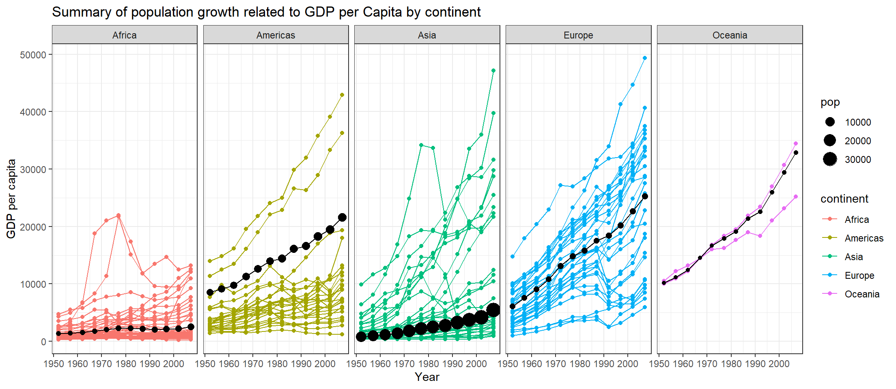

I followed the video and used dplyr to wrangle the data
library(tidyverse)
Warning: package 'ggplot2' was built under R version 4.4.1
── Attaching core tidyverse packages ──────────────────────── tidyverse 2.0.0 ──
✔ dplyr 1.1.4 ✔ readr 2.1.5
✔ forcats 1.0.0 ✔ stringr 1.5.1
✔ ggplot2 3.5.1 ✔ tibble 3.2.1
✔ lubridate 1.9.3 ✔ tidyr 1.3.1
✔ purrr 1.0.2
── Conflicts ────────────────────────────────────────── tidyverse_conflicts() ──
✖ dplyr::filter() masks stats::filter()
✖ dplyr::lag() masks stats::lag()
ℹ Use the conflicted package (<http://conflicted.r-lib.org/>) to force all conflicts to become errors
library(gapminder)
Warning: package 'gapminder' was built under R version 4.4.1
Here is the graph needed for the assignment
#Removes Kuwait and makes pop in the thousandsgapminder1 <- gapminder%>%filter(country !="Kuwait") %>%mutate(pop = pop/100000)#New Data set with weighted averages and 2.5 times pop to match the template graphgapped <- gapminder1 %>%group_by(year, continent) %>%summarise(GDP =weighted.mean(gdpPercap, pop, na.rm=T),pop= pop*2.5 )
Warning: Returning more (or less) than 1 row per `summarise()` group was deprecated in
dplyr 1.1.0.
ℹ Please use `reframe()` instead.
ℹ When switching from `summarise()` to `reframe()`, remember that `reframe()`
always returns an ungrouped data frame and adjust accordingly.
`summarise()` has grouped output by 'year', 'continent'. You can override using
the `.groups` argument.
#create base plot with countriesggplot(data = gapminder1, mapping =aes(x = year, y = gdpPercap, col = continent)) +geom_point() +geom_line(aes(group=country)) +#add weighted mean points and linesgeom_point(data = gapped, mapping =aes(x = year, y = GDP, size=pop), col="black") +geom_line(data=gapped, mapping =aes(x=year, y=GDP, group=continent), col="black")+#separate graphs by continentfacet_wrap(vars(continent), ncol =5)+#labels and themlabs(x="Year",y="GDP per capita",title="Summary of population growth related to GDP per Capita by continent")+theme_bw()

=======
I followed the video and used dplyr to wrangle the data
library(tidyverse)library(gapminder)
Here is the graph needed for the assignment
#Removes Kuwait and makes pop in the thousandsgapminder1 <- gapminder%>%filter(country !="Kuwait") %>%mutate(pop = pop/1000000)#New Data set with weightedgapped <- gapminder1 %>%group_by(year, continent) %>%summarise(GDP =weighted.mean(gdpPercap, pop, na.rm=T),pop= pop)
Warning: Returning more (or less) than 1 row per `summarise()` group was deprecated in
dplyr 1.1.0.
ℹ Please use `reframe()` instead.
ℹ When switching from `summarise()` to `reframe()`, remember that `reframe()`
always returns an ungrouped data frame and adjust accordingly.
`summarise()` has grouped output by 'year', 'continent'. You can override using
the `.groups` argument.
#create base plot with countriesggplot(data = gapminder1, mapping =aes(x = year, y = gdpPercap, col = continent)) +geom_point(alpha=.05, hex = .1, color="grey65", show.legend =c( size = T,color = F)) +geom_line(aes(group=country), color="grey85",alpha=.05, hex = .1,show.legend =c( size = T,color = F)) +#add weighted mean points and linesgeom_point(data = gapped, mapping =aes(x = year, y = GDP, size=pop,color=continent), show.legend =c( size = T,color = F)) +scale_y_continuous(breaks =seq(0, 50000, by =10000),labels =c("0","10k","20k","30k","40k","50k")) +geom_line(data=gapped, mapping =aes(x=year, y=GDP, group=continent,color=continent), show.legend =c( size = T,color = F)) +#separate graphs by continentfacet_wrap(vars(continent), ncol =5)+#labels and themlabs(x="Year",y="GDP per capita",title="Summary of population growth related to GDP per Capita by continent",size ="Population (M)")+theme_bw() +theme(axis.text.y =element_text(color="grey25",size=10.5),axis.text.x =element_text(color="grey25", size=10.5),axis.title =element_text(color="grey15", size=12),axis.ticks =element_blank(),plot.title =element_text(size=14,color="grey5", hjust = .5),panel.grid.major =element_blank(),panel.grid.minor.x =element_blank(),strip.text =element_text(size =12, face="bold", angle =0, colour ="white"),strip.background =element_rect(colour ="steelblue", fill ="steelblue"))